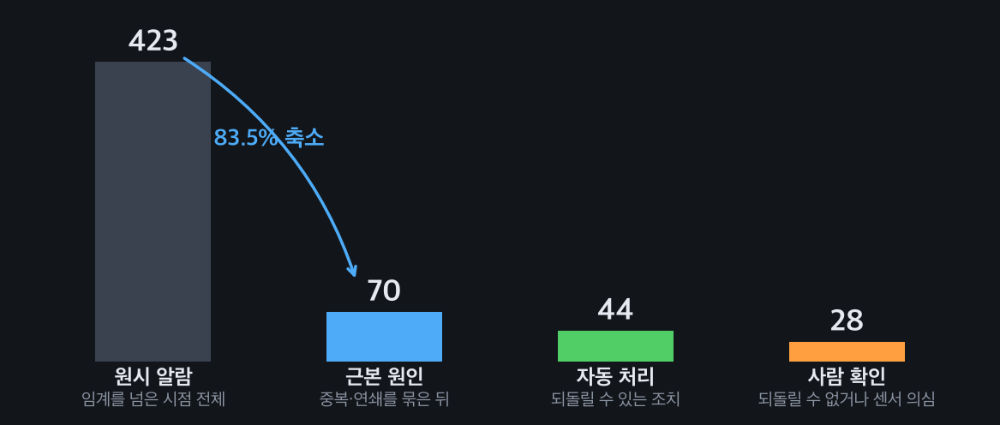
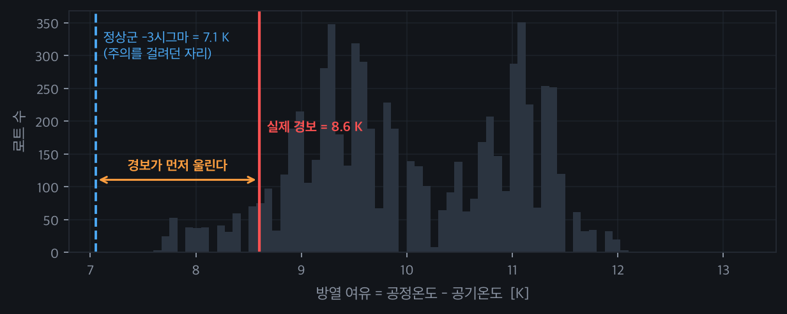
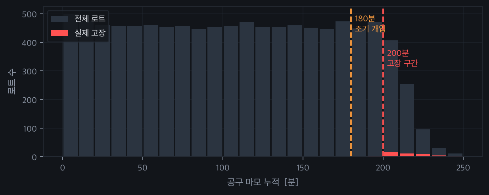
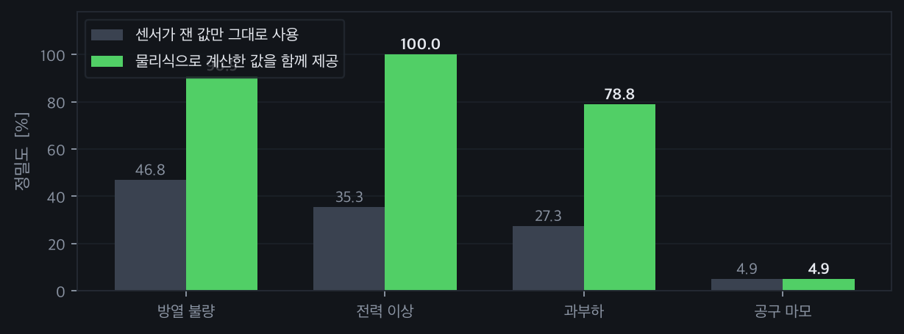

1 · 한눈에 보기
아래는 이 숫자가 나오기까지 무엇을 시도했고 무엇이 기각되었는지의 기록이다. 네 개의 가설이 기각되었고, 그 중 하나는 프로젝트의 방향 자체를 바꿨다.
2 · 문제와 발견
회전하는 공구로 재료를 깎는 설비는 공구가 닳으면 절삭 저항이 올라간다. 저항이 오르면 부하가 커지고, 부하가 커지면 발열이 늘고, 발열이 늘면 온도 알람이 뜬다. 원인은 하나인데 알람은 여러 건으로 나뉘어 올라온다. 여기에 같은 상태가 유지되는 동안 같은 알람이 계속 반복해서 발생한다.
야간 7일치를 그대로 세어 보니 임계를 넘은 시점이 423번이었다. 그런데 이것을 원인 단위로 묶으니 70건이 되었다. 나머지 353건은 같은 원인의 반복이거나 그 원인에 딸린 결과였다. 담당자가 실제로 판단해야 할 건수는 처음부터 70건이었고, 나머지는 그 70건을 찾기 위해 훑어야 하는 분량이었다.

여기서 두 번째 문제가 보였다. 70건 중에도 사람이 판단할 필요가 없는 것들이 섞여 있었다. 냉각수 유량을 올리는 것처럼 파라미터를 되돌리면 그만인 조치까지 승인을 기다린다면, 정작 공구를 교체해야 하는 판단이 뒤로 밀린다. 그래서 과제를 두 가지로 잡았다 — 알람을 원인 단위로 묶는 것, 그리고 자동으로 처리할 범위를 정하는 것이다.
공장의 알람 기록과 그에 대해 사람이 어떤 조치를 했는지가 짝지어진 공개 데이터는 존재하지 않는다. 조치 이력은 기업 내부 자산이라 공개되지 않는다. 그래서 스핀들 부하 계측 구조가 같은 회전 절삭 설비의 공개 데이터를 쓰고, 그 데이터에 라벨로 들어 있는 고장 유형 5종을 알람으로 삼았다. 조치는 각 고장 유형에 대응해 정의했다. 이 부분이 이 프로젝트에서 가장 먼저 밝혀야 할 전제다.
| 원했던 것 | 실제로 쓴 것 | |
|---|---|---|
| 데이터 | 공장 알람 로그 + 조치 이력 | 회전 절삭 설비 공개 데이터 10,000건 |
| 알람 정의 | 실제 발생 알람 | 데이터에 기록된 고장 유형 5종 |
| 조치 정의 | 실제 작업 이력 | 고장 유형별로 직접 정의 |
3 · 가설과 검증
실제 반도체 공정에서 수집한 공개 데이터가 있었다. 그런데 590개 센서가 전부 익명 처리되어 무엇을 재는 값인지 알 수 없었다. "42번 값이 0.31을 넘어 조치했다"는 문장은 설명이 되지 않는다. 값의 의미를 알 수 없으면 조치의 근거도 세울 수 없다. 이유를 설명할 수 있는 물리량이 기록된 데이터로 바꿨다.
품질 관리에서 쓰는 표준적인 방법이다. 정상 로트만 모아 평균과 표준편차를 구하고 관리한계를 잡았다. 그런데 그 선이 실제 경보 조건보다 바깥에 있었다. 미리 알려주는 역할을 해야 하는 선이 경보보다 늦게 걸리니 조기경보가 되지 못한다.

방열 여유가 8.6K 아래로 떨어지면 경보다. 그런데 통계로 잡은 −3σ는 7.1K였다. 값이 떨어지는 방향에서 경보가 1.5K 먼저 울린다. 원인은 명확했다 — 이 데이터의 고장 조건은 통계적으로 드문 값이 아니라 물리 조건으로 정의되어 있어서, 정상 분포의 꼬리와 애초에 무관했다.
경보가 8.6K면 9.5K에서 미리 알리는 식이다. 여유율을 5%부터 30%까지 바꿔가며 어느 정도가 적절한지 측정하려 했다. 그런데 측정 자체가 성립하지 않았다. 이 데이터는 각 행이 서로 독립된 스냅샷이라 "주의가 뜬 뒤 실제로 악화되었는가"를 추적할 방법이 없었다. 지표를 잘못 설계했다.
공구 마모에만 성립했다. 마모는 이 데이터에서 시간에 따라 단조롭게 쌓이는 유일한 값이라 추세를 말할 수 있다. 나머지 항목은 순간값이라 2단으로 나눌 근거가 없었다. 전체 적용을 포기하고 마모에만 남겼다.

마모 180분 이하에서는 고장이 한 건도 없었고, 200~240분 구간에서 46건이 발생했다. 그런데 같은 구간을 지나간 로트는 790건이다. 즉 임계를 넘는다고 반드시 고장 나지 않는다. 언제 터질지 알 수 없으니 터지기 전 구간에서 미리 끊는 수밖에 없다. 180분을 조기 개입 지점으로 잡은 근거다.
임계값을 직접 정하기 전에, 데이터 제공자가 문서에 적어 둔 고장 조건을 그대로 적용해 실제 고장 기록과 대조했다. 세 가지 유형이 정확히 일치했다(재현율 100%). 임계값을 지어낼 필요가 없어졌고, 이후 모든 판정의 근거가 되었다.
모델이 아무리 정확해도 되돌릴 수 없는 조치를 자동으로 실행할 수는 없다. 반대로 파라미터를 원래대로 돌리면 그만인 조치는 틀려도 손실이 작다. 기준을 정확도에서 가역성으로 바꿨다. 냉각수 유량과 이송 속도는 자동, 공구 교체는 사람으로 갈렸다.
정밀도가 27~47%에 그쳤다. 실제 고장 조건이 두 값의 곱으로 정의되어 있는데, 결정트리는 한 번에 한 값만 자를 수 있어 곱으로 된 경계를 만들지 못했다. 물리식으로 계산한 값을 함께 주자 모델이 문서에 적힌 임계값을 그대로 되찾았다.

전력은 토크와 회전수를 곱해야 나오는 값이다. 이것을 미리 계산해 주자 모델이 9,000.5W와 3,496.1W에서 경계를 그었다. 문서에 적힌 값은 9,000W와 3,500W다. 방열도 8.7K · 1,380rpm으로 갈랐고 문서 값은 8.6K · 1,380rpm이다. 모델이 물리를 알아낸 것이 아니라, 사람이 물리를 알고 계산해 준 것이 성능을 만들었다.
스핀들 과전력을 "설비 손상 위험"이라며 정지 후 사람 호출로 분류해 두었다. 그런데 같은 스핀들 부하를 나타내는 과부하 항목은 이송 속도를 낮추는 것으로 자동 처리하고 있었다. 둘 다 부하 지표인데 하나만 설비를 세우고 있었다. 과전력도 이송 속도를 먼저 낮춰 보고, 6분 뒤 조건이 풀렸는지 확인해 그래도 남아 있을 때만 사람을 부르도록 바꿨다. 사람을 부르는 근거가 "위험해 보여서"에서 "자동으로 해 봤는데 안 됐다"로 바뀌었다.
| 이전 | 이후 | |
|---|---|---|
| 자동 처리 | 35 건 | 44 건 |
| 사람 확인 | 35 건 | 28 건 |
| 사람을 부르는 근거 | 손상 위험 추정 | 자동조치 실패 확인 |
4 · 구현
알람이 들어오면 여섯 단계를 거친다. 같은 상태가 이어지는 동안 반복 발생하는 알람을 한 건으로 묶고, 짧게 끊겼다 다시 뜨는 것도 같은 사건으로 합친다. 그 다음 시간이 겹치면서 물리적으로 종속된 알람을 근본 원인 하나로 묶는다 — 공구가 닳으면 부하가 오르므로, 마모 알람과 과부하 알람은 원인이 하나다.
묶은 다음에는 센서를 믿을 수 있는지부터 판단한다. 값이 한자리에 멈춰 있거나, 물리적으로 불가능한 값이 나오거나(주변 공기가 가공 부위보다 뜨겁다), 같은 조건의 다른 설비와 크게 어긋나면 그 센서를 의심한다. 센서를 믿을 수 없으면 그 값에 기대는 알람의 자동 조치를 전부 막는다. 측정값이 틀렸는데 조치를 실행하면 멀쩡한 설비를 건드리게 된다. 7일 중 9건이 이렇게 차단되었다.
마지막으로 조치를 나눈다. 되돌릴 수 있으면 자동으로 실행하고 결과를 확인한다. 6분 뒤에도 조건이 풀리지 않으면 자동 조치가 듣지 않은 것이므로 사람에게 넘긴다. 되돌릴 수 없는 공구 교체와, 센서를 믿을 수 없어 판단 근거가 없는 건은 처음부터 사람 몫이다.
같은 입력에 다른 답이 나오면 왜 그렇게 판단했는지 되짚을 수 없고, 기록을 남겨도 추적이 되지 않는다. 임계 판정과 조치 결정은 전부 규칙으로 처리해 항상 같은 결과가 나오게 했고, 생성형 AI는 사람이 읽을 상황 요약을 쓰는 일만 맡겼다. 앞의 결정트리는 운영에 쓰려고 학습시킨 것이 아니라, 정해 둔 규칙이 타당한지 확인하려고 썼다. 모델이 되찾은 경계가 문서 값과 같았으므로 규칙을 그대로 유지했다.
화면에서는 야간 10시간을 재생해 볼 수 있다. 사람 판단이 필요한 건이 나와도 시계는 멈추지 않는다 — 실제 설비는 사람이 고민하는 동안에도 돌아가기 때문이다. 대신 재생 속도가 느려지고 판단 대기 목록에 쌓인다. 설비를 세워야 하는 건이면 회전수와 부하와 전력이 0으로 떨어지고, 가공 부위 온도는 주변 온도로 식으며, 공구 마모는 그 값에서 멈춘다. 멈춰 있는 동안 가공이 진행되지 않으므로 그만큼 생산이 밀리고, 이것을 정지 손실로 집계한다. 판단이 늦을수록 손실이 커지는 것을 숫자로 보여 준다.
5 · 결과
| 임계를 넘은 시점(원시 알람) | 423 건 |
| 근본 원인 단위로 묶은 뒤 | 70 건 · 83.5 % 축소 |
| 자동으로 처리 | 44 건 · 자동화율 61 % |
| 사람이 확인 | 28 건 |
| 센서 이상으로 자동 조치를 막은 건 | 9 건 |
| 자동 조치가 듣지 않아 사람에게 넘긴 건 | 2 건 |
판정 규칙 검증 — 데이터에 딸린 고장 조건을 실제 고장 기록과 대조한 결과다. 학습에 쓰지 않고 떼어 둔 3,000건 기준이다.
| 방열 불량 · 전력 이상 · 과부하 | 재현율 100 % (각 115 / 95 / 98 건 전부 일치) |
| 공구 마모 | 재현율 93.5 % (46건 중 43건) |
모델이 되찾은 경계값 — 물리식으로 계산한 값을 함께 주었을 때 결정트리가 그은 경계다. 괄호 안이 문서에 적힌 값이다.
| 전력 이상 | 9,000.5 W / 3,496.1 W (9,000 W / 3,500 W) · 정밀도 100 % |
| 방열 불량 | 8.7 K · 1,380 rpm (8.6 K · 1,380 rpm) · 정밀도 90.9 % |
| 과부하 | 10,998.5 (11,000) · 정밀도 78.8 % |
| 공구 마모 | 202.5 분 (200 분) · 정밀도 4.9 % |
마지막 줄이 이 표에서 가장 중요하다. 경계는 정확히 찾았는데 정밀도가 4.9%다. 마모는 임계를 넘어도 대부분 고장 나지 않는 확률적인 사건이라 어떤 모델로도 시점을 맞출 수 없다. 그래서 마모는 예측하지 않고 보수적인 시점에 미리 개입하는 쪽으로 다뤘다. 예측이 되는 것은 상태를 보고, 예측이 안 되는 것은 주기로 관리한다.
6 · 한계
증명한 것. 알람을 원인 단위로 묶으면 담당자가 볼 건수가 83.5% 줄어든다는 것, 조치의 가역성을 기준으로 나누면 61%를 자동으로 처리할 수 있다는 것, 센서를 믿을 수 없을 때 조치를 막으면 잘못 나갈 조치 9건을 걸러낸다는 것, 그리고 사용한 판정 규칙이 데이터의 실제 고장 기록과 일치한다는 것이다.
- 반도체 공정에서 측정한 데이터가 아니다. 알람과 조치 이력이 짝지어진 공개 데이터가 없어, 스핀들 부하 계측 구조가 유사한 회전 절삭 설비의 공개 데이터를 사용했다. 원본 자체도 실측이 아니라 거동을 모사해 생성된 데이터다.
- 값의 범위가 실제 설비와 다르다. 회전수가 1,168~2,886 rpm인데 실제 반도체 절단 설비는 이보다 한 자릿수 이상 높게 돈다. 값을 실제 범위로 옮기면 문서에 정의된 고장 조건을 그대로 쓸 수 없게 되고 전부 임의의 숫자가 되므로, 원본 범위를 유지하고 이 사실을 밝히는 쪽을 택했다.
- 측정 주기가 6분으로 지나치게 느리다. 실제 설비 감시 시스템은 초 단위 이하로 수집한다. 야간 10시간을 100개 지점으로 표현하려다 이렇게 되었다. 빠른 과도 현상은 이 주기로 잡히지 않는다.
- 조치와 정상 복귀 사이의 인과를 증명하지 못했다. 원본 데이터가 서로 독립된 스냅샷이라 "조치했기 때문에 풀렸다"를 확인할 방법이 없다. 이력에 적힌 조건 해제는 데이터상 조건이 풀린 시점을 가리킬 뿐이다. 그래서 조치 후 그래프를 임의로 보정하지 않았다.
- 임계값이 하나로 고정되어 있다. 실제로는 만드는 제품과 가공 조건마다 정상 범위가 다르므로 조건 단위로 관리해야 한다. 현재는 과부하 임계만 제품 등급별로 나뉘어 있고 나머지는 단일 값이다.
- 정지 중 온도가 식는 속도는 가정값이다. 회전수와 부하와 전력이 0이 되는 것, 마모가 멈추는 것은 물리적으로 결정되지만, 온도가 얼마나 빨리 식는지는 데이터에 없어 임의로 정했다. 공구 마모의 진행 속도도 마찬가지다.
- 센서 고장은 인위적으로 넣은 것이다. 원본에 센서 고장 기록이 없어 값 고착과 편류를 직접 주입했다. 실제 센서 고장의 양상과 다를 수 있다.
기각된 가설을 지우지 않고 그대로 남겼다. 통계적 관리한계를 조기경보로 쓰려던 시도는 실패했고, 여유율을 측정하려던 지표는 설계 자체가 잘못이었다. 그 실패들이 "이 데이터의 고장 조건은 통계가 아니라 물리로 정의되어 있다"는 것을 알려 주었고, 그 다음 판단의 근거가 되었다.